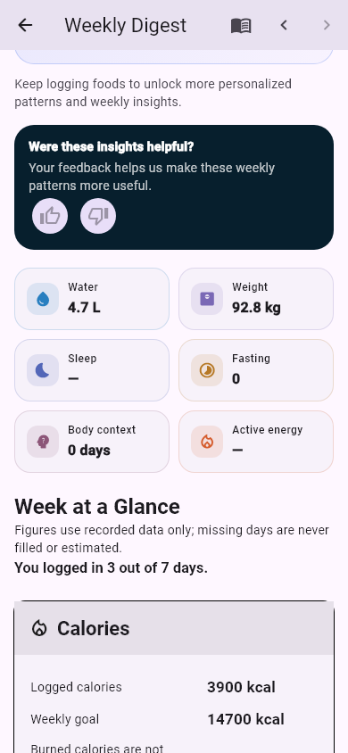
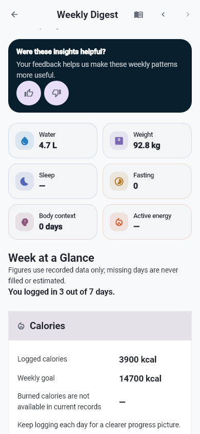
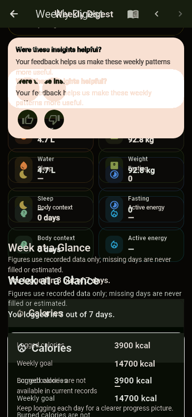

Sources: feedback و4.7L/92.8kg ثم3900kcal/14700goal محفوظة؛ framing والأحجام والحدود بعدcalm scope تغيرت. Current actual reviewed visually with its master/diffs and functional content intact. Source intentional route-local calm scope / reviewed dashboard source implementation; no removal of controls/values, no tofu, no clock rollback.
Each actual is the fresh pre-promotion Flutter output, byte verified against the individually approved baseline. Original master and both diffs retained. Narrow case PASS.


